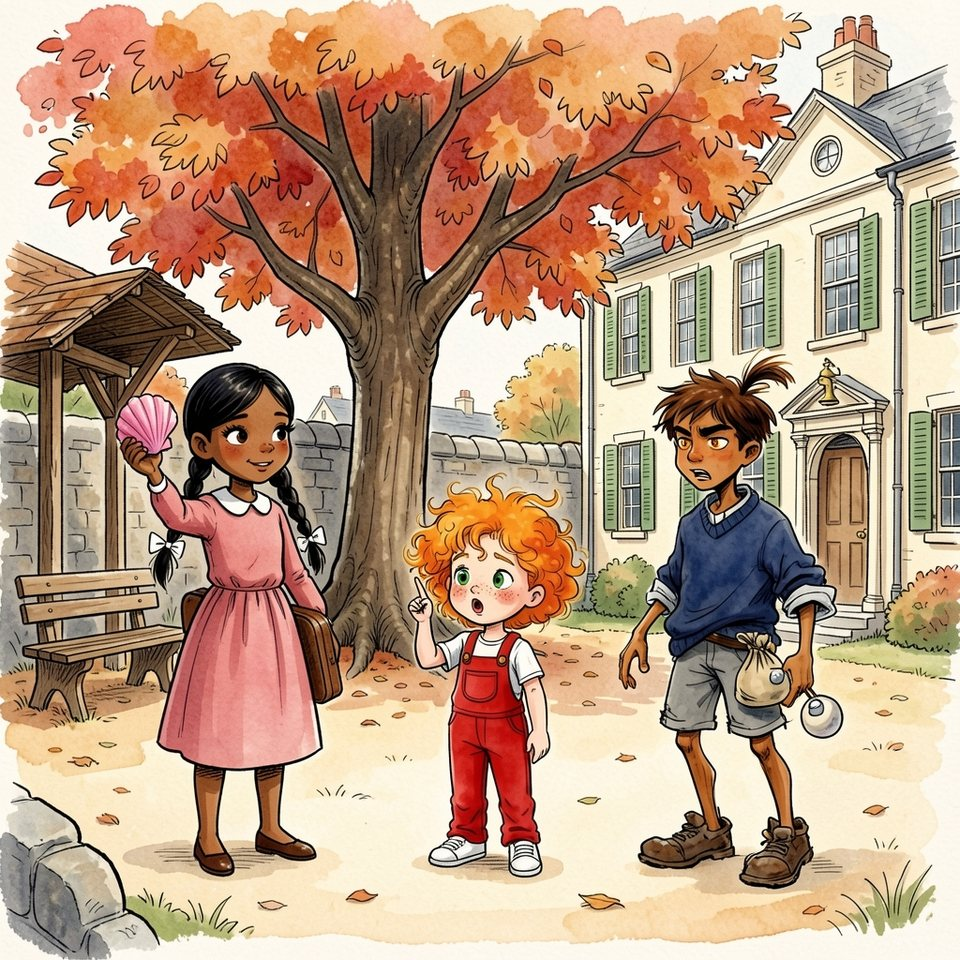

Titistoire › Les Comètes (6-8 ans)
Le trésor de rien du tout
Une année à Virevent, l'histoire du mois de octobre : Jeanne, Gaspard, Suzie et Marin.

▶ Écouter et regarder l'histoire
Gratuit, sans inscription : la voix lit, le texte suit mot à mot, les images tournent comme dans un album.
Le texte de l'histoire
Octobre soufflait sur Virevent. Dans la cour, le cerisier lâchait ses feuilles rousses une à une, et le vent les poussait sous le préau, où toute la classe se pressait autour de Garance.
Garance tenait un coquillage, rose dedans, rayé dehors. « Je l'ai rapporté de la mer. Écoutez : on entend les vagues. » Chacun colla l'oreille. Jeanne aussi. Hélas, c'était vrai.
« Ce n'est pas pour être méchante, Jeanne, mais toi, tu n'as jamais vu la mer. » Jeanne retint son souffle. Ses joues s'arrondirent. Elle chercha plus gros qu'un coquillage, plus gros que la mer. Elle trouva.
« Vous n'allez pas me croire ! Mon arrière-grand-père était corsaire. Corsaire sur la Flânette ! » Raoul, qui faisait sauter son sac de billes, ricana. « Sur la Flânette ? Il attaquait quoi ? Les canards ? »
« Les péniches ! Trente péniches ! Et son trésor, il l'a enterré ici. Juré-craché-mouillé ! » Le sac de billes cessa de sauter. Garance rangea son coquillage. « Un trésor, cela se prouve. Tu as la carte, je suppose ? »
Évidemment qu'elle avait la carte : elle l'avait promise pour le lendemain. Ce soir-là, à la maison haute, dix enfants dormaient. La septième, assise par terre dans la cuisine, contemplait une feuille désespérément blanche.
Au fond de la théière restait du thé froid. Jeanne y trempa un chiffon et barbouilla le papier, qui brunit comme une vieille peau de tambour. Elle le froissa, le défroissa, en grignota les bords.
Puis elle dessina, la langue entre les dents : la Flânette et sa boucle, le pont Bossu, le beffroi, la butte aux Alouettes coiffée de son tilleul. Restait la croix. Où un corsaire cache-t-il son trésor ?
Elle leva le chiffon pour réfléchir. Une goutte s'en détacha et tomba, ploc, au pied du tilleul. Une tache ronde, bien brune. « Tant pis, souffla Jeanne. Ce sera la croix. »
Dans la charrette rouge où il dormait mieux que dans un lit, Titou avait ouvert un œil. « Tu n'as rien vu. C'est un secret. » — « … cret ! » répondit Titou, enchanté.
Le lendemain, la carte fit le tour de la cour. Garance la flaira. « Elle sent le thé. » — « Les corsaires buvaient énormément de thé, répliqua Jeanne. Des tonneaux entiers. »
Un trésor, un vrai trésor ! La cour entière le criait. En face de l'école, un volet claqua. « Pas avant midi ! » C'était Madame Bogue, comme chaque matin. On baissa la voix. Personne ne lâcha la carte des yeux.
Raoul posa le doigt sur la tache brune. Il ne ricanait plus du tout. « La croix, c'est le tilleul de la butte. On y va à quatre heures. J'apporte une pelle. »
Jeanne sentit ses joues se dégonfler. Dans son histoire, il y avait un corsaire, des péniches, un trésor. Il n'y avait pas de pelle. « C'est que… on ne creuse pas comme ça. Il y a des règles. »
« Quelles règles ? » s'enquit Garance. — « Des règles de corsaire. Très anciennes. Je vous les donnerai là-haut. » Il lui restait jusqu'à quatre heures pour les inventer toutes.
À quatre heures, le vent faisait claquer les cerfs-volants au-dessus de la butte. Raoul arriva le premier, une pelle sur l'épaule : celle de ses frères, comme tout le reste. Garance suivait. Jeanne tirait Titou dans sa charrette.
« Première règle ! annonça Jeanne. Le trésor est gardé par une malédiction. Celui qui creuse aura les oreilles vertes. Pendant un an ! » — « Vertes ? Ça me changera, lâcha Raoul. Chez nous, tout est bleu marine. »
Et il planta la pelle au pied du tilleul. La terre vola. Garance s'assit sur le banc, très droite. « Ce n'est pas pour être méchante, mais moi, je ne creuse pas. Je constate. »
Un trou. Rien. Raoul en commença un deuxième, plus large. Titou applaudissait chaque pelletée. Jeanne, elle, regardait la terre s'entasser, et son ventre se serrait à mesure.
« Deuxième règle : la marée ! Le trésor ne remonte qu'à marée haute. » Garance haussa un sourcil. « La Flânette n'a pas de marée. » — « Si. Une toute petite. Le mardi. Et nous sommes vendredi ! »
Raoul n'écoutait pas. Troisième trou. Il avait de la terre jusqu'aux coudes. Ses manches trop longues, roulées trois fois, se déroulaient sans cesse ; il les remontait avec les dents et replongeait.
« Tu sais ce que je m'achète, moi, avec ma part ? lança-t-il du fond de son trou. Un pull. Un neuf. Avec des manches qui s'arrêtent aux mains. » Il ne ricanait pas. Il souriait à la terre.
Jeanne n'eut plus envie d'inventer. Garance ne croyait à rien : cela ne comptait pas. Mais Raoul y croyait. Il y croyait à pleines pelletées, et c'était elle qui lui avait mis ce pull dans la tête.
Quatrième trou. La butte ressemblait à un fromage, et le jour baissait. « Troisième règle, tenta Jeanne d'une petite voix. Il faut la pleine lune. Sans elle, l'or se change en feuilles. »
Raoul s'appuya sur sa pelle et montra le ciel. Au-dessus des toits d'ardoise, une lune ronde et pâle venait de se lever, comme une invitée arrivée trop tôt. « Elle est là, ta lune. »
Jeanne regarda la lune. La lune ne l'aida pas. Elle n'avait plus ni règle, ni marée, ni malédiction. Il ne lui restait qu'une chose à avouer, vraie celle-là, et lourde comme une enclume.
« Raoul… » Il attaquait déjà le cinquième trou, de l'autre côté du tilleul. « Raoul, écoute. Le corsaire… » La pelle montait, descendait. « Mon arrière-grand-père, en vrai, il… »
Clonc. La pelle venait de heurter quelque chose de dur. Ce n'était pas une racine. Ce n'était pas un caillou. C'était quelque chose qui sonnait creux.
Raoul tomba à genoux, gratta la terre à deux mains et en tira une boîte en fer, rouillée, grande comme un pain. Garance s'était levée de son banc. Jeanne ne respirait plus.
Le couvercle grinça, céda. Dedans, il y avait des billes de terre, un ruban bleu fané et un dessin plié en quatre. « Des billes, murmura Raoul. Des très vieilles. » Il les soupesa comme des pièces d'or.
Garance regardait la boîte, la carte, la boîte. « Alors c'était vrai. » Cela dut lui écorcher la langue. Raoul leva vers Jeanne des yeux tout neufs. « Ton arrière-grand-père, c'était quelqu'un. »
Jeanne ouvrit la bouche. Rien ne vint. Pour la première fois de sa vie, on la croyait jusqu'au bout. Et elle était bien la seule, sur cette butte, à ne pas se croire.
« Un vrai trésor ! » souffla Raoul. — « … zor ! » renvoya Titou, ravi. Aucun d'eux ne remarqua, sur le sentier, la petite flamme qui montait vers eux au bout d'une longue perche.
C'était Madame Bogue, son chignon hérissé d'épingles : l'heure venait d'allumer le réverbère de la butte. « Cinq trous ! Ce n'est plus une butte, c'est une passoire ! Qui va me reboucher ça ? »
Puis elle vit la boîte. Elle s'arrêta net. Ses yeux noirs firent le tour du ruban, des billes, du dessin. Elle devint aussi pâle que la lune, et s'assit sur le banc sans regarder où.
« C'est le trésor d'un corsaire, précisa Garance. L'arrière-grand-père de Jeanne. Elle avait la carte. » Madame Bogue tourna la tête vers Jeanne, très lentement. « Un corsaire. Tiens donc. »
Le beffroi sonna six heures. Garance avait son piano ; elle partit, le dos raide. « On partage demain, décida Raoul. Garde la boîte : c'est ton arrière-grand-père. » Il dévala la pente en sifflant. Il en oubliait sa pelle.
Il ne resta sur la butte que Jeanne, Titou et la vieille dame. Madame Bogue prit le ruban entre deux doigts, comme on prend un papillon. « Mon ruban du dimanche », murmura-t-elle.
« J'avais ton âge. J'avais raconté à toute l'école qu'il y avait un trésor sur la butte. Pourquoi ? Pour qu'on m'écoute, je suppose. On devait venir creuser le jeudi. »
« Alors, le mercredi soir, je suis montée ici avec la boîte à biscuits de ma mère. Mes billes, mon ruban, mon plus beau dessin. Comme cela, ce ne serait plus un mensonge. »
« Et le jeudi ? » demanda Jeanne. — « Le jeudi, il a plu. Le vendredi, on parlait d'autre chose. Personne n'a jamais creusé. » La vieille dame referma le couvercle. « Soixante ans que j'attends qu'on me croie. »
Elle regarda Jeanne par-dessous ses sourcils en broussaille. « Et ta carte, à toi, tu l'as vieillie à quoi ? » Jeanne devint plus rouge que sa salopette. « Au thé. » — « De mon temps, c'était la chicorée. »
« Te voilà prouvée, reprit Madame Bogue. Une carte, une boîte, deux témoins. Demain, toute l'école te croira. Et moi, je me tairai : j'ai soixante ans d'entraînement. »
Prouvée ! Jeanne attendit la joie. La joie ne vint pas. À sa place, elle revit Raoul au fond de son trou. Demain, il voudrait sa part. Après-demain, il creuserait encore, pour l'or, tout l'hiver, les manches dans la boue.
Et elle, il lui faudrait rester pour toujours l'arrière-petite-fille d'un corsaire, avec ses marées du mardi. Personne ne saurait jamais. C'était cela, le pire : personne ne saurait jamais.
Des pas, sur le sentier. Raoul remontait, essoufflé. « Ma pelle. Si mes frères voient qu'elle manque… » Il aperçut la figure de Jeanne et s'arrêta. « Quoi ? »
Jeanne ne gonfla pas les joues. Elle n'en avait pas besoin : ce qu'elle avait à avouer était tout petit. « Il n'y a pas de corsaire. Mon arrière-grand-père vendait des œufs. La carte, c'est du thé. J'ai tout inventé. »
Raoul regarda la carte, puis la boîte. « Et ça, alors ? » — « Elle n'est pas à moi. » La vieille dame toussota. « Elle est à une autre menteuse. Une ancienne. »
Le vent retournait les feuilles du tilleul. Jeanne attendait le ricanement ; elle l'avait bien gagné. Raoul fit rouler une dernière fois les vieilles billes dans sa paume. Puis il les reposa dans la boîte, une à une.
Il haussa les épaules. « N'empêche. On a trouvé un trésor. » Et, sans que personne lui demande rien, il reboucha les trous. Quatre sur cinq. Il tassait la terre du plat de la pelle, en sifflotant.
« Ton corsaire, lança-t-il en partant, je l'avais deviné : il attaquait les canards. » Jeanne se sentit étrangement légère. « Demain, je l'avouerai à Garance. » — « Celle-là, grommela Madame Bogue, il faudra creuser plus profond. »
Madame Bogue leva sa perche. La petite flamme toucha le réverbère de la butte, qui s'alluma, rond et jaune. En bas, Virevent n'était plus que des toits bleus et des fenêtres dorées.
Jeanne replia la carte. Elle regarda une dernière fois la tache de thé, au pied du tilleul. De toute la carte, c'était la seule chose tombée juste. Elle glissa la carte dans la boîte, contre le ruban.
Elles couchèrent la boîte au fond du dernier trou. Jeanne poussa la terre avec ses mains, Madame Bogue avec son soulier. Titou, penché hors de sa charrette, tapota le dessus. « C'est pour qui, maintenant ? » — « Pour la prochaine. »
« Quelle prochaine ? » — « Il y en a toujours une. Dans soixante ans, à peu près. Une petite qui parlera trop vite. Elle sera bien contente de trouver quelque chose. »
Jeanne tira la charrette vers la maison haute. Au-dessus du beffroi, la lune était montée, toute pleine, pour rien. « C'est un secret », chuchota-t-elle. — « … cret ! » répondit Titou.